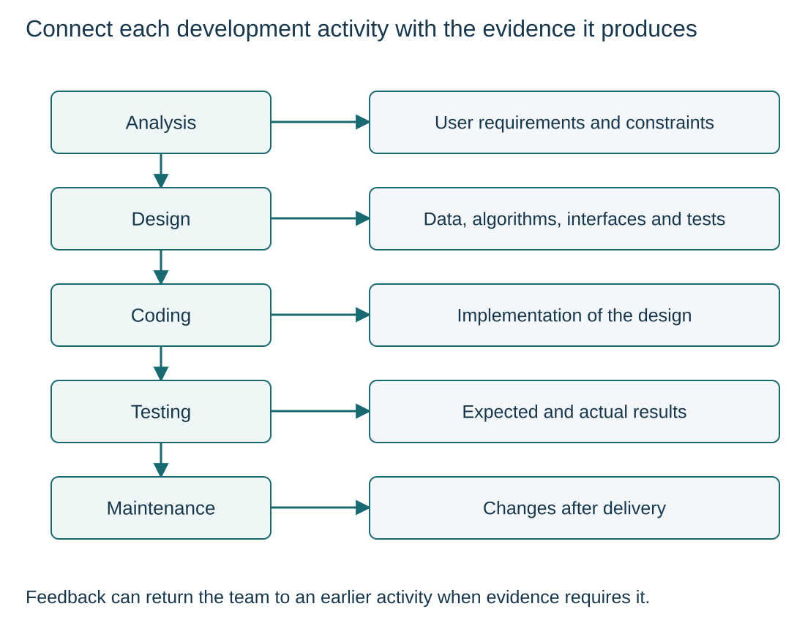

Purpose and stages of a development life cycle
S12.01.A01S12.01.A02
Visual overview
Connect each development activity with the evidence it produces

Visual transcript
- Analysis defines requirements; design specifies the solution; coding implements it; testing compares actual with expected behaviour; maintenance changes the delivered system.
- The sequence illustrates the activities, not a rule that feedback is forbidden.
- Tests or real use can expose a need to revisit requirements, design or code.
Core explanation
Purpose
A development life cycle coordinates the route from the problem to a tested, maintained solution. Records connect requirements, design decisions and results; following stages alone does not guarantee a suitable product.
What each activity establishes
- Analysis: The problem, user requirements and constraints.
- Design: Data, algorithms, module interfaces and tests.
- Coding: An implementation of the design.
- Testing: Actual behaviour compared with expected results, exposing defects.
- Maintenance: Changes after delivery as faults, environments and user needs change.
Use evidence to revisit decisions
Feedback can reveal a need to revisit earlier work. The chosen development model determines how the team organises these activities.
A library renewal feature through five stages
| Stage | Concrete output |
|---|---|
| Analysis | Rule: a book with a waiting reservation cannot be renewed |
| Design | Decision algorithm and the reservation-status interface |
| Coding | Statements that implement the renewal decision |
| Testing | Reserved and unreserved cases with expected decisions |
| Maintenance | Changes after delivery, such as support for a new lending policy |
Worked example · Resolve an ambiguous request
- Request
The librarian asks for easier renewals.
- Analysis
Agree which loans qualify and what message a refused renewal needs.
- Design and coding
Specify the decision and then implement its branches.
- Testing and maintenance
Check agreed examples before release; record later policy changes separately.